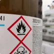

Introdução
É importante que você compreenda os impactos da Norma Regulamentadora nº 7 (NR 7) no seu dia a dia, porque ela busca preservar a sua saúde e a sua integridade física e mental.
Ao aprender sobre ela, você poderá compartilhar sua importância com os demais colegas de trabalho e proporcionar um ambiente de trabalho seguro e saudável para todos. Na prática, você poderá aplicar a NR 7 da seguinte maneira:
- entenda seus objetivos e requisitos; identifique os riscos
- presentes no seu ambiente de trabalho;
- colabore com os exames médicos ocupacionais e demais ações de saúde;
- siga as orientações do Programa de Controle Médico de Saúde Ocupacional (PCMSO) para manter hábitos saudáveis.
No decorrer do curso, você aprenderá mais sobre cada um desses pontos.
O que é a NR7?
O que é a NR7?
arrow_upwardO que é a NR7?
closeA Norma Regulamentadora nº 7 (NR 7) é uma regra estabelecida pelo Ministério do Trabalho que visa orientar como as empresas devem cuidar da saúde dos trabalhadores em relação aos riscos ocupacionais presentes no ambiente de trabalho.
Quem participa?
arrow_upwardQuem participa?
closeÉ uma norma que é escrita com a participação das empresas, dos trabalhadores e do governo, em formato tripartite.
Objetivo
arrow_upwardObjetivo
closeEla estabelece diretrizes e requisitos para o desenvolvimento do Programa de Controle Médico de Saúde Ocupacional (PCMSO) nas organizações, com o objetivo de proteger e preservar a saúde de seus empregados em relação aos riscos ocupacionais, conforme avaliação de riscos do Programa de Gerenciamento de Risco (PGR) da organização.
Evolução da NR7
Desde o início da NR 7, em 1978, até os dias de hoje, muita coisa se alterou. Porém, todas as mudanças tiveram como objetivo melhorar a saúde do trabalhador.
Veja um pouco dessas mudanças:
1978
Portaria MTb nº 3.214, de 8 de junho de 1978 – NR 7
Exames médicos (1978 – todo empregado passou a ter direito a fazer exames médicos periodicamente).
Acesse open_in_new1994
Portaria SSST nº 24, de 29 de dezembro de 1994 – NR 7
Programa de Controle Médico de Saúde Ocupacional (promoção e preservação da saúde dos trabalhadores) Esta alteração foi um marco, trazendo o aspecto gerencial sobre a saúde da população de trabalhadores e não somente do indivíduo.
Acesse open_in_new1998
Portaria SSST nº 19, de 9 de abril de 1998
Esta alteração foi relevante, com a inclusão de diretrizes do controle da audição – Anexo I – Programa de Conservação Auditiva
Acesse open_in_new2011
Portaria SIT nº 223, de 6 de maio de 2011
Alteração relevante, com a introdução de regras para controle – Anexo II de interpretação de radiografias de tórax
Acesse open_in_new2020
Portaria SEPRT nº 6.734, de 9 de março de 2020
Publicação da NR 7 atual, com grandes melhorias em relação à gestão da saúde e qualidade técnica de controle médico
Acesse open_in_new2021
Portaria SEPRT nº 1.295, de 2 de fevereiro de 2021
Apenas prorrogou a data de início da nova NR 7 para 2 de agosto de 2021
Portaria SEPRT nº 8.873, de 23 de julho de 2021
Novamente prorrogada para início em 3 de janeiro de 2022, estando vigente desde então
Controle médico de algumas exposições
Alguns riscos ocupacionais têm na NR 7 a determinação de como a vigilância deve ser feita através de exames complementares:
-
Exposição de produtos químicos
Quando há exposição a alguns produtos químicos, é necessária a realização de exames de urina a cada seis meses;
-
Exposição a poeiras e minerais
A exposição a poeiras minerais demanda a realização de raios x de tórax e do exame de espirometria periodicamente, entre um e três anos, dependendo da intensidade da poeira no ambiente;
-

Exposição a produtos químicos cancerígenos
A exposição a produtos químicos cancerígenos demanda a realização de exames específicos, mesmo em baixa intensidade no ambiente;
-
Exposição ao ruído
A exposição ao ruído demanda controle da audição através do exame de audiometria no mínimo a cada ano.
Atestado de saúde ocupacional
-
Principal função
O exame ocupacional é a principal ferramenta do médico do trabalho.
Como demonstrado, é importante que todas as questões de saúde relacionada ao trabalho e aos hábitos de vida sejam pesquisadas pelo médico e informadas de forma fidedigna pelo trabalhador.
-
Atestado de Saúde Ocupacional (ASO)
A cada exame ocupacional, o trabalhador deve receber o Atestado de Saúde Ocupacional (ASO).
Nesse atestado estarão registrados os riscos ocupacionais aos quais o trabalhador está exposto, os exames que foram realizados e a definição de aptidão.
-
Aptidão
A aptidão, ou apto no ASO, significa que o trabalhador pode exercer a atividade de trabalho sem risco de adoecimento ou agravamento de doenças que porventura